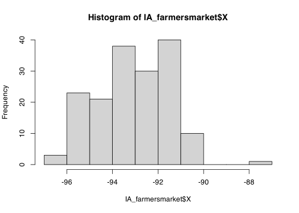

In the next section, I include an example report analysing farmers markets in Iowa.
This is my background workings - all my text are things I might think in my head, you don’t need to write all of this.
You can see what I would actually submit in the next section.
My example tutorial is set in Iowa on farmers markets. First, set up libraries
Now I will read in my data, on farmers markets in Iowa. Sometimes adding in the na option helps, so I will try that.
IA_farmersmarket <- readxl::read_excel("./Data/Farmers_Markets_Iowa.xlsx",na="NA")
names(IA_farmersmarket)## [1] "X" "Y" "FID" "City" "County"
## [6] "Location" "Market_Name" "Open_Dates" "Open_Hours" "State"
## [11] "Weekday"OK, I can see I have the columns above and if I click on its name in the Environment tab I can see more details. First, I’ll take a quick look at the summary.
## X Y FID City
## Min. :-999.00 Min. :37.29 Min. : 1.0 Length:175
## 1st Qu.: -94.37 1st Qu.:41.36 1st Qu.: 44.5 Class :character
## Median : -93.18 Median :41.71 Median : 88.0 Mode :character
## Mean : -98.37 Mean :41.86 Mean : 88.0
## 3rd Qu.: -91.69 3rd Qu.:42.48 3rd Qu.:131.5
## Max. : -87.12 Max. :43.43 Max. :175.0
## NA's :3 NA's :5
## County Location Market_Name Open_Dates
## Length:175 Length:175 Length:175 Length:175
## Class :character Class :character Class :character Class :character
## Mode :character Mode :character Mode :character Mode :character
##
##
##
##
## Open_Hours State Weekday
## Length:175 Length:175 Length:175
## Class :character Class :character Class :character
## Mode :character Mode :character Mode :character
##
##
##
## From this, I can see some weird things!
Hmm there is a very small longitude value in X that can’t exist
# get rid of the row with the weird value
# I could also set it to NA
IA_farmersmarket <- IA_farmersmarket[which(IA_farmersmarket$X > -990),]
# and print the summary
summary(IA_farmersmarket[,c("X","Y")])## X Y
## Min. :-96.56 Min. :37.29
## 1st Qu.:-94.34 1st Qu.:41.36
## Median :-93.10 Median :41.70
## Mean :-93.11 Mean :41.85
## 3rd Qu.:-91.69 3rd Qu.:42.48
## Max. :-87.12 Max. :43.43
## NA's :5OK that looks better.
I don’t need all this data, so let’s keep things neat.
## [1] "X" "Y" "FID" "City" "County"
## [6] "Location" "Market_Name" "Open_Dates" "Open_Hours" "State"
## [11] "Weekday"I quite like the skim function from skimr for this. Here are my columns (same as name command)
## Rows: 166
## Columns: 11
## $ X <dbl> -95.13766, -91.17124, -95.74293, -93.68677, -93.92560, -91…
## $ Y <dbl> 43.36571, 40.81963, 41.04704, 41.61103, 40.62401, 40.53341…
## $ FID <dbl> 1, 2, 3, 4, 5, 6, 7, 8, 9, 10, 11, 12, 14, 15, 16, 17, 18,…
## $ City <chr> "Arnolds Park", "West Burlington", "Glenwood", "Des Moines…
## $ County <chr> "DICKINSON", "DES MOINES", "MILLS", "POLK", "DECATUR", "LE…
## $ Location <chr> "Arnolds Park", "609 S. Gear Avenue", "418 E Sharp St", "4…
## $ Market_Name <chr> "Akron Farmers Market", "Ames - North Grand Farmers Market…
## $ Open_Dates <chr> "06/28/2018 - 09/13/2018", "06/16/2018 - 10/27/2018", "05/…
## $ Open_Hours <chr> "04:30 PM - 06:30 PM", "09:00 AM - 12:00 PM", "04:00 PM - …
## $ State <chr> "IA", "IA", "IA", "IA", "IA", "IA", "IA", "IA", "IA", "IA"…
## $ Weekday <chr> "Thursday", "Saturday", "Wednesday", "Thursday", "Wednesda…IA_farmersmarket <- IA_farmersmarket[,c("X","Y","FID",
"City","County",
"Market_Name",
"Weekday")]
summary(IA_farmersmarket)## X Y FID City
## Min. :-96.56 Min. :37.29 Min. : 1.00 Length:166
## 1st Qu.:-94.24 1st Qu.:41.36 1st Qu.: 44.25 Class :character
## Median :-93.10 Median :41.70 Median : 85.50 Mode :character
## Mean :-93.07 Mean :41.85 Mean : 85.81
## 3rd Qu.:-91.67 3rd Qu.:42.48 3rd Qu.:126.75
## Max. :-87.12 Max. :43.43 Max. :175.00
## County Market_Name Weekday
## Length:166 Length:166 Length:166
## Class :character Class :character Class :character
## Mode :character Mode :character Mode :character
##
##
## # Note, X and Y because that's what the columns are called.
# I know that it was in lat/long originally, hence the crs
IA_farmersmarket.sf <- st_as_sf(IA_farmersmarket,coords=c("X","Y"),crs=4326)
# And change to a map projection of your choice. I am choosing UTM Iowa
IA_farmersmarket.sf <- st_transform(IA_farmersmarket.sf,3744)
# make a quick plot
tmap_mode("view")
qtm(st_geometry(IA_farmersmarket.sf))You can see in the plot above that there appears to be one point that is not in Iowa. So now I will look at the long/lat columns.
## Min. 1st Qu. Median Mean 3rd Qu. Max.
## -96.56 -94.24 -93.10 -93.07 -91.67 -87.12
I feel that maybe that point at Long ~ -88 is wrong. Let’s take a look.
I’m guessing there’s a typo - so I could just google this and fix it! but for now, let’s remove and try again.
# choose all the other ones, note the <= instead of >
IA_farmersmarket <- IA_farmersmarket[IA_farmersmarket$X <= -90,]
# Note, X and Y because that's what the columns are called.
# I know that it was in lat/long originally, hence the crs
IA_farmersmarket.sf <- st_as_sf(IA_farmersmarket,coords=c("X","Y"),crs=4326)
# And change to a map projection of your choice. I am choosing UTM Iowa
IA_farmersmarket.sf <- st_transform(IA_farmersmarket.sf,3744)
# make a quick plot
tmap_mode("view")
qtm(st_geometry(IA_farmersmarket.sf))